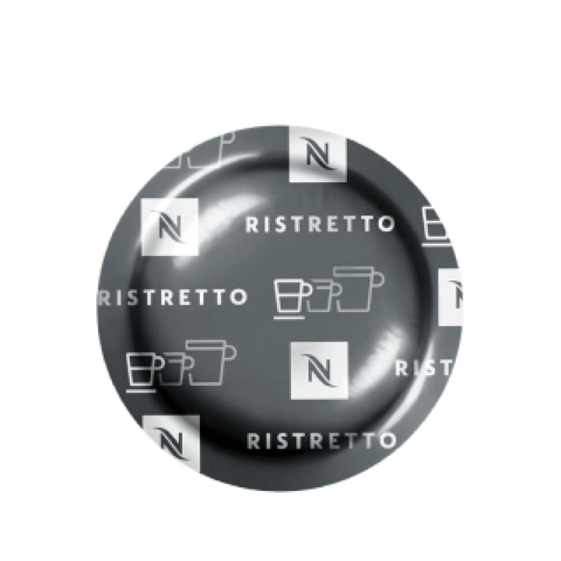

Concierge
Panoramica
Le mie macchine
Consumi
Ordini
Caffè sospeso
Eventi
Chiedi all'assistente
Assistente
Avanza di un giorno
+1 giorno
Avanza di una settimana
+1 settimana
Ricomincia

Scopri i caffè